CH02-047 — images
【失敗リプレイ】眠れないほど後悔を巻き戻す脳
ep
CH02
Script Viewer
snapshot
guide
台本
音声
サムネ
画像
CH02-047
画像
updated_at: 2026-01-13T07:31:31.224813Z
run_id:
CH02-047_mix433_20260106_cuesplan_ok
CH02-047
失敗・布団
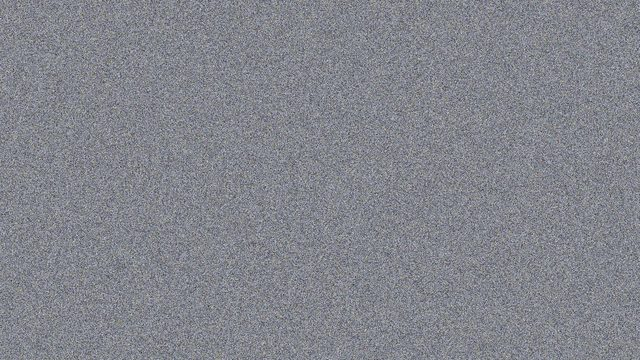
CH02-047
責任・成長
CH02-047
ギャップ・材料
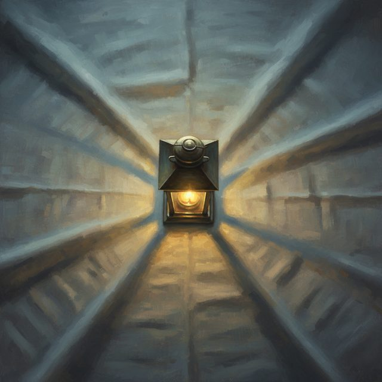
CH02-047
疲労・蓄積
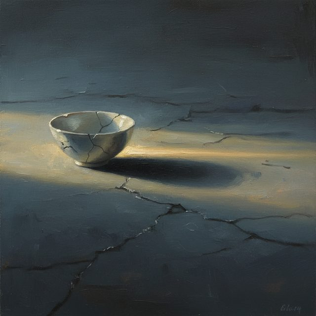
CH02-047
音量・呼吸
CH02-047
感情・心
CH02-047
失敗・五分
CH02-047
言葉・手放
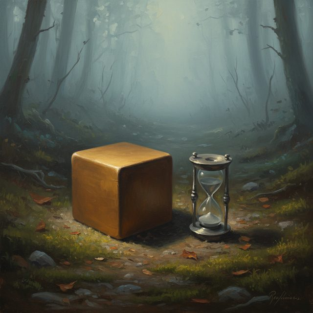
CH02-047
評価・具体策
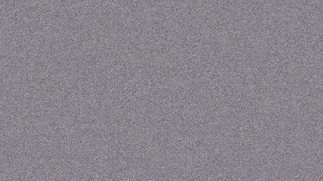
CH02-047
罪悪感・行動
CH02-047
言葉・距離
CH02-047
完璧・準備
CH02-047
距離・過去
CH02-047
部分・事実
CH02-047
約束・心
CH02-047
過去・手紙
CH02-047
時間・ソクラテス
CH02-047
言葉・今日一日
CH02-047
一行・今夜
CH02-047
空気・目覚
CH02-047
ミス・自己否定
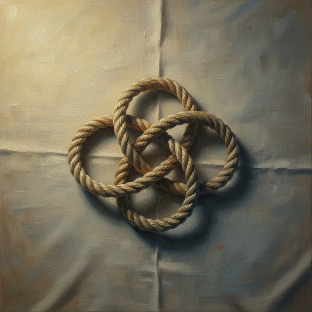
CH02-047
自己否定・家事
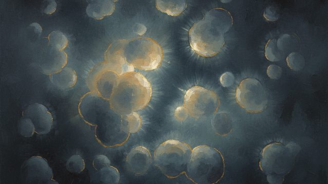
CH02-047
謝罪・過剰
CH02-047
回復・時間
CH02-047
未来・一時停止
CH02-047
自己否定・他人
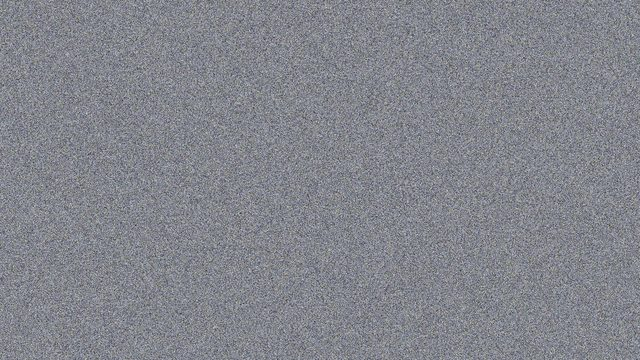
CH02-047
努力・成功
CH02-047
自己否定・心
CH02-047
明日・期待
CH02-047
行動・サイン
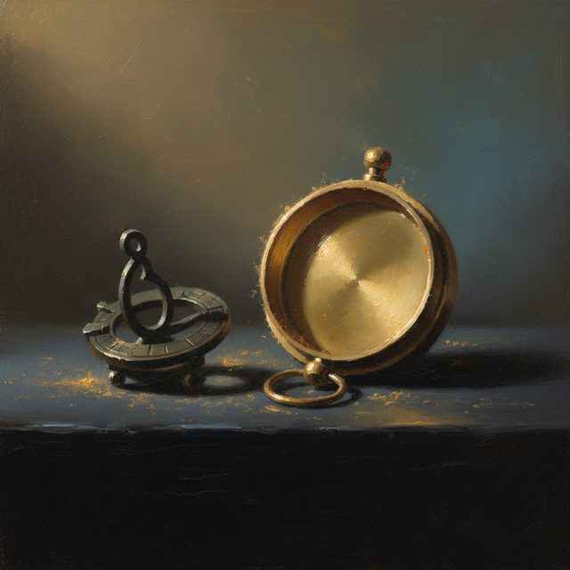
CH02-047
罪悪感・理由
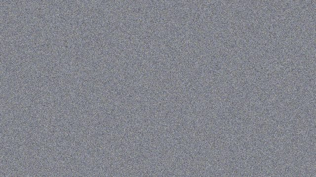
CH02-047
視線・自己否定
CH02-047
失敗・完璧
CH02-047
自己否定・材料
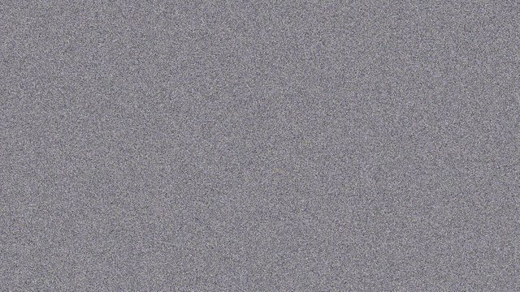
CH02-047
判断・自己否定
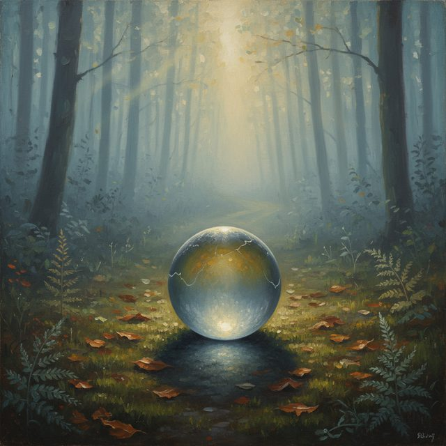
CH02-047
言葉・報酬
CH02-047
時間・自己否定
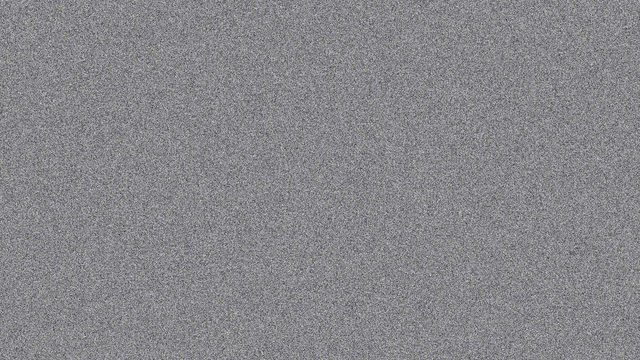
CH02-047
未来・視界
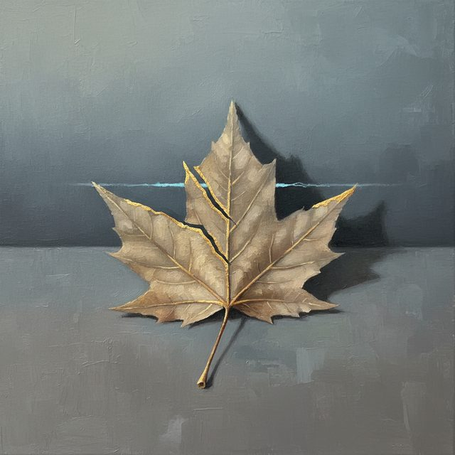
CH02-047
批評家・翻訳
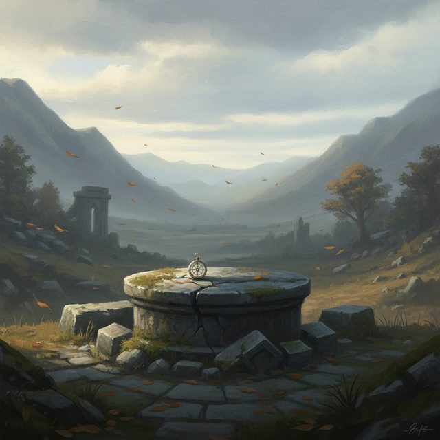
CH02-047
複数・挑戦
CH02-047
自己否定・余地